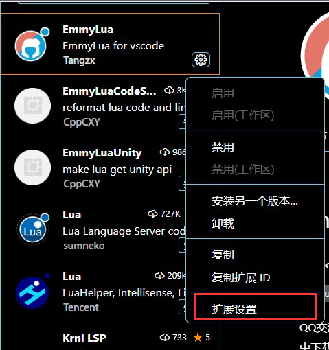
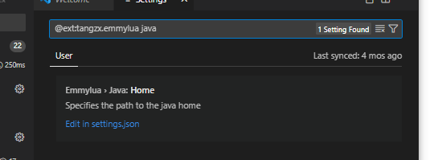
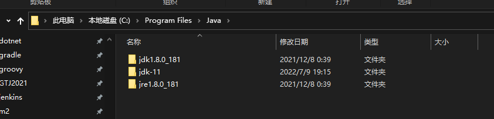

Visual Studio Code（以下简称 VS Code）是一款由微软推出的免费且开源的代码编辑器。而 Emmy Lua 是一款专为 Lua 语言开发者设计的插件。在本文中，我们将介绍如何安装 VS Code 并配置 Emmy Lua 环境，以便进行 Lua 开发。
安装 VS Code
首先，我们需要下载并安装 VS Code。请按照以下步骤操作：
- 访问 VS Code 官网。
- 点击 “Download for Windows”（如果你使用 Windows 操作系统）或 “Download for Mac”（如果你使用 macOS 操作系统）。
- 根据你的操作系统选择适合的安装程序，并下载。
- 运行下载好的安装程序，并按照提示进行安装。
或者，可以从以下连接进行安装
https://vscode.cdn.azure.cn/stable/3a6960b964327f0e3882ce18fcebd07ed191b316/VSCodeUserSetup-x64-1.62.2.exe
安装 Emmy Lua
安装 VS Code 后，我们需要安装 Emmy Lua 插件。请按照以下步骤操作：
- 打开 VS Code。
- 点击左侧的扩展图标（或按下快捷键 Ctrl + Shift + X）。
- 在搜索框中输入 “Emmy Lua” 并选择第一个搜索结果。
- 点击 “Install” 按钮，等待插件安装完成。
配置 Emmy Lua 环境
配置 Emmy Lua 环境需要先安装 JDK。如果你已经安装了 JDK，可以跳过本节内容。
安装 JDK
jdk 版本推荐在 "1.8.0_181" 以上
- 访问 JDK 下载页面。
- 选择适合你操作系统的版本，并下载。
- 运行下载好的安装程序，并按照提示进行安装。
更加详细的步骤看此文档
如何安装 JDK（Java Development Kit）
配置 Emmy Lua 环境
安装完 JDK 后，如果没有设置 JDK 的环境变量则我们需要对 Emmy Lua 插件进行一些简单的配置。请按照以下步骤操作：
- 打开 VS Code。
- 点击左侧的扩展图标（或按下快捷键 Ctrl + Shift + X）。
- 在已安装的插件列表中找到 “Emmy Lua” 插件，并点击右侧的 “Extension Settings” 按钮。

- 在弹出的配置面板中，找到 “Emmy: Java Home” 选项，并填入 JDK 的安装路径。
**"emmylua.java.home": "<你的路径>" 注意，路径需要用 / 分割，而非 **


- 在 Windows 上，默认安装路径为 C:/Program Files/Java/jdk{版本号}。
- 在 macOS 上，默认安装路径为 /Library/Java/JavaVirtualMachines/jdk{版本号}/Contents/Home。
- 配置完成后，关闭配置面板。
至此，我们已经成功安装了 VS Code 和 JDK，并配置了 Emmy Lua 环境，可以开始愉快地进行 Lua 开发了。